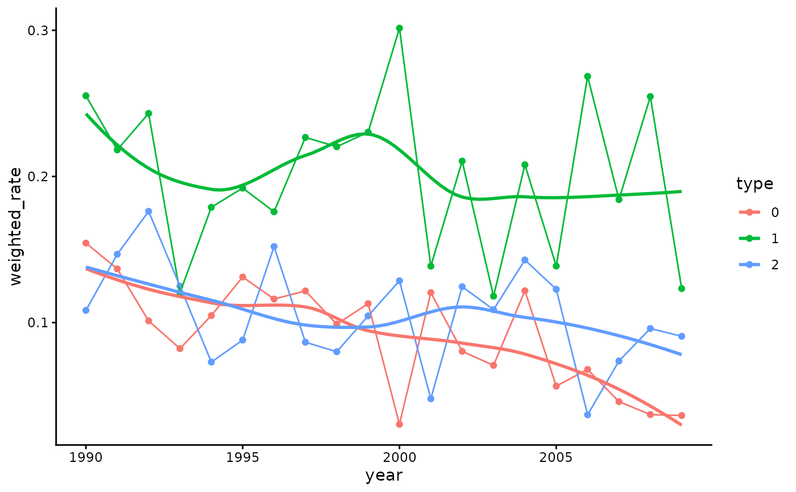

Directly standardized incidence rates using the WHO standard population
Source:R/incidencR.R
incidencR.RdDirectly standardized incidence rates inspired by the dsr package by Matt Kumar. The incidence rates are standardized on 5-year age intervals and sex for each year in the period 1990-2025 based on population tables of the Danish population. Lastly the incidence rates are weighted based on the WHO world population.
Arguments
- data
data set containing age, sex and index date and group
- group
optional if incidence rates should be provided per group
- strata
list of vectors for which strata the incidence rates should be reported (e.g. per age-group and sex)
- ci.method
the method for derivation of confidence intervals. Default is "normal". If negative CIs are reported, use "lognormal"
- reference
whether the reference population should include all possible age-sex-groups ("full" (default)) or only the age-groups present in data ("partial")
- index
variable name of the index data
- age
name of the age variable
- sex
name of the sex variable
- pyears
the unit of the incidence rate. Default is 100.000 person years
Value
a standardized incidence rate of the overall population and, if specified in the strata-argument, stratified incidence rates
Examples
(rates <-
incidencR(redcap_df %>%
recodR(list("sex" = list("Female" = 1,
"Male" = 2))),
index = date_of_surgery,
group = type,
unit = 100000,
strata = list(c("year"),
c("age", "sex"),
c("year", "type"),
c("year", "type", "age"),
c("type", "age"),
c("year", "age", "sex", "type"))))
#> $overall
#> # A tibble: 1 × 8
#> cases pyears crude_rate crude_lower crude_upper weighted_rate weighted_lower
#> <dbl> <int> <dbl> <dbl> <dbl> <dbl> <dbl>
#> 1 500 9587250 0.157 0.144 0.171 0.134 0.122
#> # ℹ 1 more variable: weighted_upper <dbl>
#>
#> $type
#> # A tibble: 3 × 9
#> type cases pyears crude_rate crude_lower crude_upper weighted_rate
#> <chr> <dbl> <int> <dbl> <dbl> <dbl> <dbl>
#> 1 0 113 3195750 0.106 0.0884 0.128 0.0916
#> 2 1 254 3195750 0.239 0.211 0.270 0.203
#> 3 2 133 3195750 0.125 0.106 0.148 0.106
#> # ℹ 2 more variables: weighted_lower <dbl>, weighted_upper <dbl>
#>
#> $year
#> # A tibble: 20 × 9
#> year cases pyears crude_rate crude_lower crude_upper weighted_rate
#> <dbl> <dbl> <int> <dbl> <dbl> <dbl> <dbl>
#> 1 1990 28 419343 0.182 0.125 0.263 0.173
#> 2 1991 27 432639 0.175 0.120 0.255 0.167
#> 3 1992 28 446781 0.181 0.125 0.262 0.174
#> 4 1993 18 464193 0.116 0.0730 0.184 0.109
#> 5 1994 19 477192 0.122 0.0777 0.191 0.119
#> 6 1995 25 490059 0.160 0.108 0.236 0.137
#> 7 1996 28 501561 0.178 0.123 0.257 0.148
#> 8 1997 26 506523 0.164 0.112 0.241 0.145
#> 9 1998 25 505932 0.157 0.106 0.233 0.133
#> 10 1999 28 503244 0.176 0.121 0.254 0.149
#> 11 2000 27 497292 0.169 0.116 0.246 0.154
#> 12 2001 21 493317 0.131 0.0853 0.201 0.102
#> 13 2002 26 491055 0.161 0.110 0.237 0.138
#> 14 2003 18 486123 0.111 0.0702 0.177 0.0992
#> 15 2004 32 483960 0.198 0.140 0.279 0.158
#> 16 2005 22 480522 0.136 0.0892 0.206 0.106
#> 17 2006 26 476589 0.160 0.109 0.235 0.124
#> 18 2007 24 475506 0.147 0.0984 0.219 0.101
#> 19 2008 30 477078 0.183 0.128 0.261 0.129
#> 20 2009 22 478341 0.133 0.0876 0.202 0.0835
#> # ℹ 2 more variables: weighted_lower <dbl>, weighted_upper <dbl>
#>
#> $age_sex
#> # A tibble: 36 × 10
#> age sex cases pyears crude_rate crude_lower crude_upper weighted_rate
#> <chr> <chr> <dbl> <int> <dbl> <dbl> <dbl> <dbl>
#> 1 0-5 f 0 9587250 0 0 0 0
#> 2 0-5 m 0 10083213 0 0 0 0
#> 3 10-15 f 5 9135225 0.0547 0.0228 0.131 0.0547
#> 4 10-15 m 6 9594990 0.0625 0.0281 0.139 0.0625
#> 5 15-20 f 10 9319305 0.107 0.0577 0.199 0.107
#> 6 15-20 m 3 9762906 0.0307 0.00991 0.0953 0.0307
#> 7 20-25 f 16 10075380 0.159 0.0973 0.259 0.159
#> 8 20-25 m 14 10429581 0.134 0.0795 0.227 0.134
#> 9 25-30 f 15 11105847 0.135 0.0814 0.224 0.135
#> 10 25-30 m 20 11485065 0.174 0.112 0.270 0.174
#> # ℹ 26 more rows
#> # ℹ 2 more variables: weighted_lower <dbl>, weighted_upper <dbl>
#>
#> $year_type
#> # A tibble: 60 × 10
#> year type cases pyears crude_rate crude_lower crude_upper weighted_rate
#> <dbl> <chr> <dbl> <int> <dbl> <dbl> <dbl> <dbl>
#> 1 1990 0 9 139781 0.175 0.0912 0.337 0.154
#> 2 1990 1 13 139781 0.253 0.147 0.436 0.255
#> 3 1990 2 6 139781 0.117 0.0525 0.260 0.108
#> 4 1991 0 8 144213 0.155 0.0777 0.311 0.137
#> 5 1991 1 12 144213 0.233 0.132 0.411 0.218
#> 6 1991 2 7 144213 0.136 0.0648 0.285 0.147
#> 7 1992 0 5 148927 0.0969 0.0403 0.233 0.101
#> 8 1992 1 14 148927 0.271 0.161 0.458 0.243
#> 9 1992 2 9 148927 0.174 0.0907 0.335 0.176
#> 10 1993 0 4 154731 0.0772 0.0290 0.206 0.0822
#> # ℹ 50 more rows
#> # ℹ 2 more variables: weighted_lower <dbl>, weighted_upper <dbl>
#>
#> $year_type_age
#> # A tibble: 1,080 × 11
#> year type age cases pyears crude_rate crude_lower crude_upper
#> <dbl> <chr> <chr> <dbl> <int> <dbl> <dbl> <dbl>
#> 1 1990 0 0-5 0 139781 0 0 0
#> 2 1990 0 10-15 1 158212 0.309 0.0435 2.19
#> 3 1990 0 15-20 0 179114 0 0 0
#> 4 1990 0 20-25 0 195498 0 0 0
#> 5 1990 0 25-30 1 192184 0.253 0.0356 1.79
#> 6 1990 0 30-35 2 180894 0.539 0.135 2.16
#> 7 1990 0 35-40 0 182047 0 0 0
#> 8 1990 0 40-45 0 201915 0 0 0
#> 9 1990 0 45-50 0 173493 0 0 0
#> 10 1990 0 5-10 0 132153 0 0 0
#> # ℹ 1,070 more rows
#> # ℹ 3 more variables: weighted_rate <dbl>, weighted_lower <dbl>,
#> # weighted_upper <dbl>
#>
#> $type_age
#> # A tibble: 54 × 10
#> type age cases pyears crude_rate crude_lower crude_upper weighted_rate
#> <chr> <chr> <dbl> <int> <dbl> <dbl> <dbl> <dbl>
#> 1 0 0-5 0 3195750 0 0 0 0
#> 2 0 10-15 2 3045075 0.0320 0.00801 0.128 0.0320
#> 3 0 15-20 3 3106435 0.0472 0.0152 0.146 0.0474
#> 4 0 20-25 9 3358460 0.132 0.0685 0.253 0.132
#> 5 0 25-30 8 3701949 0.106 0.0531 0.212 0.106
#> 6 0 30-35 11 3841799 0.140 0.0778 0.254 0.140
#> 7 0 35-40 9 3844057 0.115 0.0598 0.221 0.115
#> 8 0 40-45 8 3834592 0.103 0.0513 0.205 0.103
#> 9 0 45-50 8 3751866 0.105 0.0526 0.210 0.105
#> 10 0 5-10 0 3098822 0 0 0 0
#> # ℹ 44 more rows
#> # ℹ 2 more variables: weighted_lower <dbl>, weighted_upper <dbl>
#>
#> $year_age_sex_type
#> # A tibble: 2,160 × 12
#> year age sex type cases pyears crude_rate crude_lower crude_upper
#> <dbl> <chr> <chr> <chr> <dbl> <int> <dbl> <dbl> <dbl>
#> 1 1990 0-5 f 0 0 139781 0 0 0
#> 2 1990 0-5 f 1 0 139781 0 0 0
#> 3 1990 0-5 f 2 0 139781 0 0 0
#> 4 1990 0-5 m 0 0 147296 0 0 0
#> 5 1990 0-5 m 1 0 147296 0 0 0
#> 6 1990 0-5 m 2 0 147296 0 0 0
#> 7 1990 10-15 f 0 0 158212 0 0 0
#> 8 1990 10-15 f 1 2 158212 1.26 0.316 5.05
#> 9 1990 10-15 f 2 0 158212 0 0 0
#> 10 1990 10-15 m 0 1 165472 0.604 0.0851 4.29
#> # ℹ 2,150 more rows
#> # ℹ 3 more variables: weighted_rate <dbl>, weighted_lower <dbl>,
#> # weighted_upper <dbl>
#>
ggplot(rates$year_type, aes(x=year, y=weighted_rate, color = type, fill = type)) +
geom_point() +
geom_line() +
#geom_ribbon(aes(ymin = weighted_lower, ymax = weighted_upper), alpha = 0.2, color = NA) +
geom_smooth(se=F) +
theme_classic()
#> `geom_smooth()` using method = 'loess' and formula = 'y ~ x'
